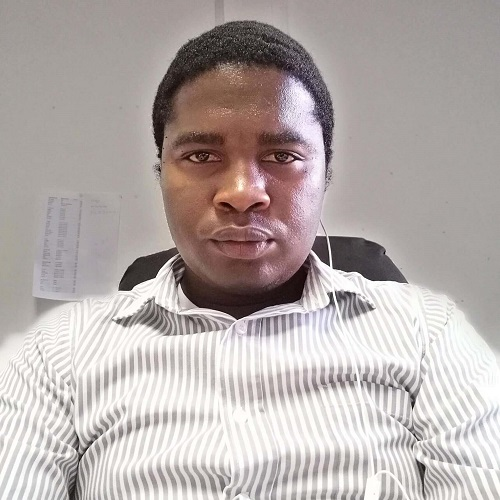

The purpose of this website is to provide information about me that will be helpful to anyone who have access to the website. Please feel free to browse through.

Who is Oaitse
My name is Oaitse Lepodise, born in a village called Diphale (Kweneng District) in Botswana. I was born in 1986. Some of my nicknames that other people might remember are; Setogo, Togo, Mabizela, Leponesa, Matoni, Bizolo. I lived most of my life in Molepolole village where I did Standard one to seven in Neale Primary School. Form one to three, I was in Sedumedi Junior Secondary School and then form four and five in KS2 (Kgosi Kgari Schele Senior Secondary School). Then I moved to tertiary and studied Software development at NIIT which changed its name to Botho University. I love going to the cattle post because that is where I used to go when the schools were closed to see my grandparents and my mother. I used to take care of the cattle and I was considered the best in my community.
